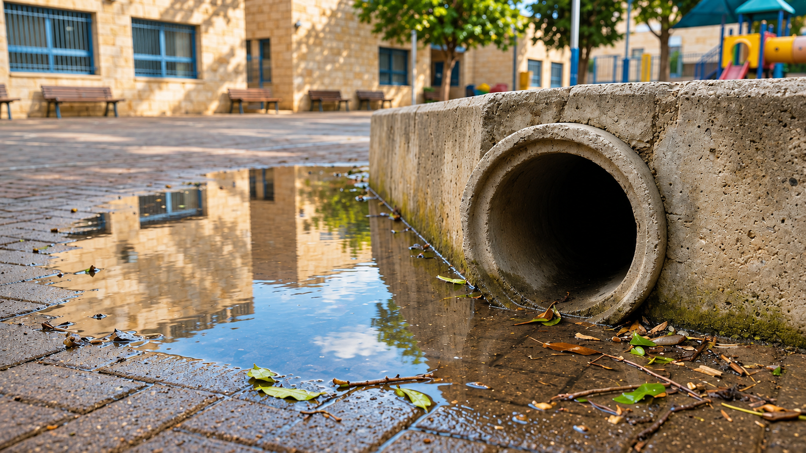

فحص الأماكن
تصوير داخل أنبوب
بقيت البركة. ماذا يختبئ بعد المنعطف؟

بركة قرب الساحة
«انتهى المطر، لكنّ البركة لم تتحرّك!» صاح ساعر حين وصل إلى الساحة. ساعر البالغ عشر سنوات يصل إلى المدرسة بعد ليلة ممطرة ويكتشف أنّ قرب ملعب الألعاب بقيت بركة كبيرة. بجانب البركة فتحة أنبوب تصريف تقود المياه إلى نظام تحت الأرض.
يحدّد مسؤول الصيانة المنطقة حسب الحاجة ويطلب من التلاميذ ألّا يقتربوا من الفتحة. يحتاج إلى فحص لماذا لا تُصرَّف المياه كالمعتاد، لكن لا صورة لديه الآن عمّا يوجد داخل الأنبوب.
لا يمكن رؤية التتمّة
من الخارج يظهر الجزء الأوّل من الأنبوب فقط. بعده منعطف ويصبح الحيّز الداخليّ مظلمًا. يحاول ساعر تخيّل ما يوجد هناك، لكنّه يكتشف أنّ الخيال لا يكفي لفهم حالة حقيقيّة.
يشرح مسؤول الصيانة أنّه ممنوع إدخال أيدٍ أو أشياء إلى فتحات كهذه. أيّ فحص يتطلّب معدّات وإجراءات مناسبة.
يشير ساعر إلى الأوراق المتراكمة قرب الفتحة. «ها، وجدنا ما يسدّ»، يقول. يطلب مسؤول الصيانة ألّا يُستنتج من ذلك أنّ القناة مسدودة هنا تحديدًا: الأوراق الظاهرة قد تكون جزءًا صغيرًا ممّا حدث، وهي لا تعلّم ما يختبئ بعد المنعطف.
أثناء نظرهم من الخارج تسقط قطرة من سطح الخرسانة إلى المياه الراكدة. يذكّر الصوت الصغير ساعر أنّ البركة ما زالت هناك، لكن لا سبيل لرؤية الأنبوب كلّه من نقطة واحدة. هذه صعوبة مسافة وظلام وزاوية معًا.
عدّة أسباب ممكنة
ربّما داخل الأنبوب أوراق أو مادّة أخرى تسدّ تدفّق المياه. وربّما الأنبوب تالف، وربّما تصل إليه المياه أسرع ممّا يستطيع النظام نقله.
يفهم ساعر أنّ البركة علامة على ظاهرة، لكنّها لا تكشف وحدها مكان المشكلة. لاختيار علاج ينبغي التمييز بين ما يُرى في الخارج وما يحدث داخل نظام غير ظاهر.
ما المهمّ لمسؤول الصيانة
يحتاج إلى معرفة حجم المكان الذي يجب فحصه، وكم يبعد الجزء غير المرئيّ، وما حدود الأنبوب. معلومات جزئيّة قد تؤدّي إلى فحص المكان الخطأ.
يفكّر ساعر في الفرق بين تصوير عامّ للفتحة ووصف موقع وهيئة عائق داخل حيّز ضيّق. ليست كلّ صورة تسمح بفهم المسافة أو حجم ما يُرى.
ظلام ورطوبة ومنعطف
المنطقة داخل الأنبوب مظلمة، وقد يوجد فيها ماء، والأنبوب غير مستقيم. وحتّى إن أمكن رؤية شيء في الداخل يصعب معرفة في أيّ جزء من المسار هو.
يلاحظ ساعر أنّ فحص مكان ضيّق يختلف عن فحص غرفة: مجال الحركة أقلّ، وزوايا النظر محدودة، وينبغي معرفة كيف نتجنّب الإضرار بالأنبوب نفسه.
على خريطة قديمة للساحة يبدو خطّ الأنبوب شبه مستقيم. لكن مسؤول الصيانة يشرح أنّ الأنابيب أحيانًا تغيّر اتّجاهها تحت سطح الأرض وأنّ الخطّة لا تروي كلّ تغيّر جرى على مرّ السنين.
يتخيّل ساعر صورة تُلتقط عميقًا داخل الأنبوب. إن لم يُعرف من أيّ مسافة وبأيّ اتّجاه صُوّرت، فحتّى صورة حادّة قد لا تساعد على تحديد المكان. الآن يفهم أنّه ينبغي التفكير في موقع المكتشف لا في مجرّد رؤيته.
ما المعروف وما الناقص
من المعروف أين تقع الفتحة، وأنّ المياه تتجمّع في الخارج، وأنّ الأنبوب يستمرّ تحت الأرض. وغير معروف إن وُجد انسداد، وأين هو، وما حالة الأجزاء الداخليّة.
يقترح ساعر وصف ما ينقص بدقّة وعدم تقرير الجهاز المناسب مسبقًا. يريد أن يتمكّن مسؤول الصيانة من تلقّي معلومات لا تخمينات.
قبل أن نبتكر
يبحث الصفّ كيف يمكن رؤية وتوثيق حيّز يصعب أو يُحظر الدخول إليه. لا يُجرى فحص حقيقيّ لأنبوب المدرسة؛ وتبقى المسؤوليّة لدى أصحاب المهنة.
ما المهمّ معرفته عن الإضاءة والمسافة والزاوية؟ وكيف تميّزون بين تصوير مفيد وتصوير يتعذّر فهم موقعه؟ وكيف تعرّفون حدود سلامة واضحة قبل تخطيط فكرة؟
تلميح من عالم الفضاء
طوّر مهندسو الفضاء أنظمة رصد مرنة تساعد على فحص مناطق يصعب الوصول إليها في المركبة الفضائيّة. فكّروا أيّ قيود لحيّز ضيّق ومظلم مشتركة أيضًا مع حالة ساعر.
بعد القراءة — في ورقة الفريق
تحدّثوا في الفريق وأجيبوا استنادًا إلى معلومات القصّة. إذا نقصت معلومة، اكتبوا سؤالًا للمتابعة.
- من تريدون مساعدته في القصّة؟
- ماذا يحاول أن يفعل وما الذي يصعّب عليه ذلك؟
- ما الذي يحتاج إلى أن يكون قادرًا على فعله؟
- ما الذي تريدون معرفته أيضًا قبل تطوير الأفكار؟